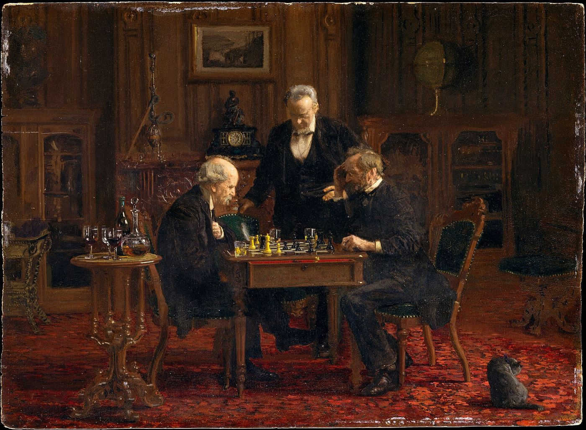
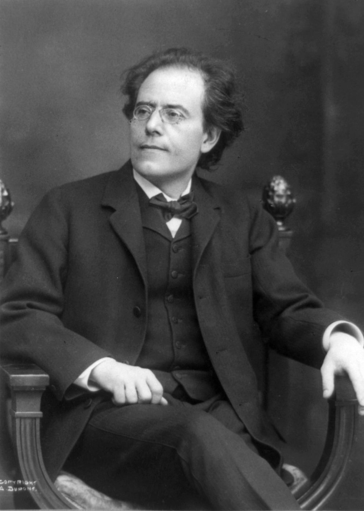

Der Löwe springt nur einmal.
Sigmund Freud, “Die endliche und die unendliche Analyse” (1937)
I
Bir terapiye başlamadan önce ne kadar süreceğini sormak, zaman, emek ve maddi kaynak gerektiren bir sürece girmeden önce ne beklenmesi gerektiğini bilmek istemek kadar doğaldır. Psikanalizin bu soruya verdiği yanıt, çoğu zaman sabırsızlıkla karşılanır: Önceden belirlenmiş bir süre yoktur. Hızın, verimliliğin, ölçülebilir sonuçların değer gördüğü bir dünyada, bir sürecin ne zaman biteceğini bilmeden ona başlamak, kendi başına bir güven, hatta bir cesaret ister. Bu yanıt bir kaçamak gibi duyulabilir; oysa psikanalizin tarihi, bu soruyla ciddi biçimde, defalarca ve bazen dramatik biçimde boğuşmuş bir disiplinin tarihidir. Freud’dan bugüne, analizin ne kadar sürmesi gerektiği, ne zaman ve nasıl biteceği, hatta bitip bitemeyeceği, psikanalitik düşüncenin en canlı tartışmaları arasında yer almıştır.
Freud bu soruya ilk kez 1913’te, analitik tedavinin başlangıcına dair yazdığı teknik makalede değinir ve epigraftaki cümleyle değil, bir satranç benzetmesiyle yanıt verir. Satranç kitaplarından oyunu öğrenmek isteyen biri, der Freud, yalnızca açılışların ve oyun sonlarının sistemli bir biçimde anlatılabildiğini, açılıştan sonra başlayan sonsuz çeşitlilikteki hamlelerin ise böyle bir anlatıma direndiğini fark edecektir. Analitik tedavinin kuralları da benzer bir sınırlamaya tabidir.1 Freud aynı makalede, hastaların tedavinin süresini sormakta haklı olduklarını, ama bu soruya kesin bir yanıt vermenin imkânsız olduğunu açıkça söyler ve Ezop’un bir masalına başvurur: Yolcu, kendisine yolun ne kadar süreceğini soran bir gezgine önce “Yürü!” diye karşılık verir; ancak onun yürüyüş hızını gördükten sonra varış süresini tahmin edebilir.
Aynı makalede Freud, zamanın pratik düzenine dair bugün de geçerliliğini koruyan bir ilke koyar. Her analizana belirli bir saati kiralar; o saat analizana aittir ve analizan onu kullanmasa da ondan sorumludur. Freud bu katılığın gerekçesini açıkça yazar: Esnek bir düzende, “rastlantısal” engeller, hastalıklar, beklenmedik işler, analizin dirençle yüklendiği dönemlerde çoğalır ve tedavi farkında olmadan kendi kendini sabote eder.2 Bu ilke ilk bakışta ticari bir kural gibi görünebilir; ama analitik açıdan zamanın kendisinin bir malzeme olduğunu söyler. Bir saatin ayrılmış olması, analizanın hayatında, onun kendi sözüne ait, başka hiçbir şeye bırakılmayan bir yer açar. Bugün psikanalizle çalışan pek çok analistin “elli dakikalık saat” dediği düzen de bu ilkenin bir mirasıdır; ifade, Amerikalı psikanalist Robert Lindner’in 1955’te yayımladığı vaka öyküleri kitabının başlığıyla yaygınlaşmıştır.3
II
Psikanalizin ilk on yıllarında tedaviler bugün düşünülemeyecek kadar kısa olabiliyordu. Dora’nın analizi on bir hafta sürmüştü; Sıçan Adam’ınki yaklaşık bir yıl. Freud’un en ünlü “kısa analizi” ise belki de 1910 yazında, Hollanda’nın Leiden kentinde, besteci Gustav Mahler’le yaptığı ve yaklaşık dört saat süren bir yürüyüştür. Evliliğinde derin bir kriz yaşayan Mahler, defalarca ertelediği bu görüşme için Freud’un tatil yaptığı Hollanda’ya gelmişti; Freud yıllar sonra, bu tek görüşmede Mahler’in anneye bağlılığı ve aşk hayatındaki güçlükler üzerine önemli bir şey yakalayabildiklerini aktaracaktır.4 Ernest Jones’un aktardığına göre bu yürüyüşte Mahler, Freud’a çocukluğundan bir sahne anlatmıştı: Babası annesine kaba davrandığı sırada, dayanamayıp evden sokağa koşmuş ve o anda bir laternanın sokakta neşeli bir Viyana halk şarkısı, “Ach, du lieber Augustin”i çaldığını duymuştu. Mahler’e göre, bestelerinde en derin trajik anların ortasına birdenbire sıradan, neşeli bir ezginin sızması, o günden kalan bir bağlantıydı: Trajedi ile hafif eğlence onun ruhunda birbirinden ayrılmaz biçimde düğümlenmişti.5 Tek bir yürüyüşte bu kadar şeyin konuşulabilmesi, analizin zamanının takvimle ölçülemeyeceğini bir kez daha gösterir. Mahler bir yıl sonra öldü.


Aynı yıllarda Freud, sonradan Kurt Adam olarak tanınacak genç bir Rus aristokratının analizini yürütüyordu ve bu analiz, Freud’u süre sorusuyla yüz yüze getiren ilk vaka oldu. Analiz 1910’da başlamış, birkaç yıl sonra tıkanmıştı: Analizan uysal, işbirliğine açık ve ilgiliydi, ama hiçbir şey değişmiyordu. Freud bunun üzerine radikal bir karar aldı ve analizin belirli bir tarihte, 1914 yazında, ne olursa olsun sona ereceğini ilan etti. Freud’un aktardığına göre bu süre sınırının baskısı altında, analizanın direnci çözüldü ve analiz kısa sürede belirleyici malzemeyi üretti.6 Freud yirmi üç yıl sonra bu deneyimi değerlendirirken bir halk deyişine başvurur ve epigraftaki cümleyi kurar: Aslan yalnızca bir kez sıçrar. Süre sınırı, doğru anda konduğunda etkili olabilir; ama ikinci kez kullanılamaz, bir kez koyduktan sonra da geri alınamaz. Kurt Adam’ın sonraki hayatı da bu değerlendirmenin ihtiyatını doğrular: Birkaç yıl sonra yeniden yardıma ihtiyaç duyacak, 1926–1927’de Freud’un öğrencisi Ruth Mack Brunswick’in yanında ikinci bir analize girecektir.
III
1920’ler, psikanalitik tedavinin süresine dair ilk büyük deneyler dönemidir. Sándor Ferenczi, analistin daha etkin bir tutum alarak, analizana belirli davranışları yasaklayarak ya da önererek süreci hızlandırabileceği “etkin teknik”i geliştirdi. Otto Rank ise 1924’te yayımladığı Doğum Travması’nda, bütün nevrozların kökeninde doğumun kendisinin, anneden ilk ayrılışın yattığını ileri sürdü ve bu travmanın analizde süre sınırlı bir çalışmayla çok daha hızlı işlenebileceğini savundu. İkili aynı yıl, psikanalizin gelişim hedefleri üzerine ortak bir kitap da yayımladı.7 Freud bu deneylere önce ilgiyle, sonra giderek artan bir kuşkuyla yaklaştı; Rank’ın kuramı Freud’la yollarını ayırmasıyla sonuçlandı.
Ferenczi ise birkaç yıl sonra, 1927’de, analizin sonu üzerine yazdığı kısa bir makalede, kendi kısaltma deneylerinden de bir ders çıkarır. Ona göre doğru bir analiz, dışarıdan konan bir tarihle değil, kendi kendine, deyim yerindeyse tükenerek sona ermelidir: Analizan, analize artık ihtiyaç duymadığını, analistin onun için olağanüstü bir figür olmaktan çıktığını, söyleyecek yeni bir şeyin kalmadığını yavaş yavaş fark eder ve analiz, bir hastalık gibi değil, bir uzun konuşmanın doğal sonu gibi biter.8 Bu düşünce, Freud’un Kurt Adam’a koyduğu süre sınırının tam karşısında durur. İki yaklaşım arasındaki gerilim bugün de sürer: Bir yanda analizin kendi zamanına saygı, öbür yanda bu zamanın sonsuza dek uzamaması gerektiği bilgisi.
Kısaltma arayışı psikanalizin sonraki tarihinde de sürdü. Franz Alexander ile Thomas French, 1946’da yayımladıkları kitapta, analizin süresi ve sıklığının esnek biçimde ayarlanabileceğini ve tedavinin “düzeltici duygusal deneyim” sağlayarak kısaltılabileceğini öne sürdüler. Bu kitap, sonraki on yıllarda geliştirilen kısa süreli psikodinamik terapilerin, örneğin David Malan’ın, Peter Sifneos’un ve Habib Davanloo’nun yaklaşımlarının öncüleri arasında sayılır.9 Bugün psikodinamik gelenek içinde, belirli bir odak etrafında birkaç ay süren kısa çalışmalardan yıllara yayılan analizlere uzanan geniş bir yelpaze vardır.
Analizin neden zaman aldığı sorusunun en derin yanıtı, Freud’un bilinçdışına dair bir gözleminde saklıdır. 1915’te bilinçdışı üzerine yazdığı makalede Freud, bilinçdışı süreçlerin zamansız olduğunu söyler: Zaman içinde sıralanmazlar, zamanın geçişiyle değişmezler, zamanla hiçbir ilişkileri yoktur.10 Otuz yıl önce yaşanmış bir aşağılanma, bilinçdışında dün yaşanmış gibi tazedir; çocuklukta bir anneye yöneltilmiş bir istek, yetişkin bir kadının ya da erkeğin bugünkü ilişkisinde aynı yoğunlukla iş başındadır. Bilinçdışının bu zamansızlığı, analizin zamanını açıklar. Analiz, zamanla değişmeyen bir şeyi, söz aracılığıyla, zamanın içine sokmaya çalışır: Geçmişte donmuş bir sahneyi bir anıya, bir öyküye, bir geçmişe dönüştürmeye. Bu dönüşüm bir kerede gerçekleşmez; aynı sahne farklı biçimlerde tekrar tekrar karşılanmadan geçmiş, gerçekten geçmiş olamaz.
Freud bu sürecin zamanını, iki yıl sonra, yas üzerine yazdığı makalede tarif etmişti. Sevilen biri öldüğünde, gerçeklik sınaması, sevilen nesnenin artık var olmadığını gösterir ve libidonun ondan çekilmesini ister. Ama bu talep bir kerede yerine getirilmez. Freud’a göre yas çalışması, tek tek, büyük bir zaman ve enerji harcamasıyla gerçekleşir: Kaybedilen kişiye bağlanan her anı, her beklenti, her umut ayrı ayrı çağrılır, yeniden yaşanır ve ancak ondan sonra bırakılabilir.11 Analizin zamanı da bu yasın zamanına benzer. Analizde bırakılan şey yalnızca bir semptom değildir; eski bir kimlik, bir umut, bir fantezi, bir ilişki biçimi de bırakılır. Ve bunların her biri, tıpkı yasta olduğu gibi, ancak tek tek, defalarca yeniden çağrılarak, zamanla vedalaşılabilir hâle gelir.
IV
Freud süre sorusuna ömrünün sonunda, 1937’de yayımladığı ve psikanaliz tarihinin en dürüst metinlerinden biri sayılan Sonlu ve Sonsuz Analiz’de döner. Metnin sorusu basit ama sarsıcıdır: Bir analizin doğal bir sonu var mıdır? Freud, “analizin sonu” ifadesinin iki anlamını birbirinden ayırır. Pratik anlamda bir analiz, analist ile analizan artık görüşmeyi bıraktıklarında biter; bu da analizanın semptomlarından kurtulduğu, kaygılarını ve ketlenmelerini aştığı ve analistin, bastırılmış olanın yeterli ölçüde bilince çıkarıldığına kanaat getirdiği zaman olur. Ama Freud’un asıl ilgilendiği, daha iddialı bir anlamdır: Analizin, analizan üzerinde, sürdürülmesiyle artık hiçbir değişikliğin beklenemeyeceği bir noktaya ulaşıp ulaşamayacağı.12
Freud’un yanıtı ihtiyatlıdır. Analiz, dürtülerin gücü, benliğin savunmalarla uğradığı değişiklikler ve yaşamın ileride getireceği sarsıntılar karşısında her şeyi çözemez. Freud metnin sonunda, her iki cinsiyette de analizin ulaşabileceği bir sınıra, deyim yerindeyse bir “ana kayaya” dayandığını söyler: kadınlarda penis hasedi, erkeklerde ise başka bir erkek karşısında edilgin bir konuma düşmeye karşı duyulan derin direnç. Bu tezin cinsiyete dair varsayımları bugün haklı olarak tartışmalıdır; ama Freud’un asıl dersi, analizin sonsuz bir mükemmellik vaadi olmadığı, bir sınırla karşılaşmayı da içerdiğidir. Metnin bir başka ünlü pasajında Freud, analiz etmeyi, eğitmek ve yönetmekle birlikte, sonuçlarının yetersiz kalacağından baştan emin olunabilecek üç “imkânsız meslek”ten biri olarak tanımlar ve analistlerin de, kendi analizlerinin üzerinden belli bir süre geçtikten sonra, örneğin her beş yılda bir, yeniden analize girmelerini önerir.
V
Freud’un kendi pratiğinde analizanlar haftada altı gün, her gün aynı saatte görülüyordu. Klasik psikanaliz uzun süre haftada dört ya da beş seansı standart kabul etti; bugün ise psikanalitik yönelimli çalışmaların büyük kısmı haftada bir ya da iki görüşmeyle yürütülür. Sıklık, analizanın ihtiyacına, yaşam koşullarına ve sürecin evresine göre belirlenir ve zaman içinde değiştirilebilir; yoğun bir dönemde artırılabilir, sonlanmaya yaklaşırken seyrekleştirilebilir. Düzenlilik, sıklığın kendisi kadar önemlidir: Görüşmelerin aynı gün ve saatte, kesintisiz sürmesi, konuşmanın bir görüşmeden ötekine taşınmasını, bilinçdışı malzemenin bir sürekliliğe kavuşmasını kolaylaştırır.
Aynı süreklilik, paradoksal biçimde, aralarla da beslenir. Analistin tatilleri, bayramlar, bir hastalık ya da bir yolculuk yüzünden verilen aralar, analizanlarda çoğu zaman beklenmedik derecede güçlü duygular uyandırır: öfke, terk edilmişlik, kaygı, ya da tersine, tuhaf bir rahatlama. Bu duygular analitik çalışmanın önemli malzemelerindendir. Ama aralar bir başka işlev de görür. Donald Winnicott 1958’de, yalnız kalabilme yetisinin, çocuğun annesinin varlığında yalnız kalabildiği deneyimlerden doğduğunu yazmıştı: Çocuk, annesi yanındayken, ona ihtiyaç duymadan, kendi oyununa dalabildiği ölçüde, sonradan gerçekten yalnız kalabilmeyi öğrenir.13 Analizdeki aralar da, analizanın analizi analistin yokluğunda da taşıyabilmeyi, kendi sorularını kendisiyle birlikte götürebilmeyi denediği anlardır. Bir analizin sonuna yaklaştığının işaretlerinden biri, aralardan sonra analizanın, analistin yokluğunda da analizin sürdüğünü fark ederek dönmesidir.
Seansın süresi, psikanaliz tarihinin en sert tartışmalarından birinin konusu oldu. Klasik gelenek, genellikle elli dakikalık sabit seanslarla çalışır. Lacan ise 1950’lerin başından itibaren seansın süresini konuşmanın akışına göre belirleme, anlamlı bir sözün söylendiği ya da konuşmanın kendi kendini tekrar etmeye başladığı anda seansı sonlandırma pratiğini geliştirdi. Bu pratiğe, müzikteki bir terimden ödünç alınmış bir adla, scansion, yani noktalama ya da kesim adı verilir. Değişken süreli seans, Lacan’ın Uluslararası Psikanaliz Derneği ile yaşadığı çatışmanın başlıca nedenlerinden biriydi; bu çatışma önce 1953’teki bölünmeye, sonra 1963’te Lacan’ın eğitim analistleri listesinden çıkarılmasına yol açtı. Lacan’ın gerekçesi, seansın kronometreyle değil, söylemin kendi mantığıyla ölçülmesi gerektiğiydi; eleştirmenleri ise bu pratiğin keyfî kullanımlara açık olduğunu vurguladı. Bugün Lacanyen yönelimli çalışmaların bir kısmı değişken süreli seanslarla, bir kısmı sabit sürelerle yürütülür ve çalışmanın çerçevesi ilk görüşmelerde açıkça konuşulur.
VI
Lacan’ın zaman sorusuna en özgün katkısı ise, 1945’te yayımladığı ve Écrits’ye girecek olan Mantıksal Zaman ve Önceden Kestirilen Kesinliğin Savlanması başlıklı denemedir.14 Deneme, bir hapishane müdürünün üç mahkûma sunduğu bir mantık bilmecesiyle başlar. Müdürün elinde üç beyaz, iki siyah disk vardır; her mahkûmun sırtına, kendisinin göremeyeceği ama ötekilerin görebileceği bir disk tutturulacaktır. Kendi diskinin rengini mantıklı bir akıl yürütmeyle ilk bulan ve kapıdan çıkan özgür kalacaktır. Müdür üçünün sırtına da beyaz disk takar. Lacan’ın çözümlemesinde mahkûmlar, birbirlerinin tereddütlerini ve hareketsizliklerini gözlemleyerek, aynı anda, kendi disklerinin de beyaz olduğu sonucuna varırlar ve kapıya yürürler.
Lacan bu akıl yürütmede üç ayrı zaman ayırt eder: görme anı, anlama zamanı ve sonuca varma anı. Bilmecenin dersi, sonuca varma anının, anlama zamanının tamamlanmasını beklemediğidir: Mahkûmlar, kesinliği önceden kestirerek, bir tür aceleyle harekete geçerler; ve bu aceleyle verilen karar, kesinliği yaratır. Bu fikir, analizin zamanını düşünmek için olağanüstü verimlidir. Analizin süresi, takvimle ölçülen kronolojik bir süre değil, mantıksal bir süredir. Anlama zamanı, analizanın kendi tarihini, tekrarlarını ve fantazmını kavramak için ihtiyaç duyduğu zamandır ve kimse onun ne kadar süreceğini önceden bilemez. Ama analiz, bu anlama zamanının sonsuza dek uzamasına da teslim olmamalıdır; bir noktada, sonuca varma anı gelir. Analizin hem sabır hem de cesaret gerektirmesi bundandır: anlamak için gereken zamana katlanma sabrı ve bir noktada, her şey anlaşılmadan, bir karara varma cesareti.
Eski Yunanlılar zaman için iki ayrı kelime kullanırdı. Khronos, saatlerin, günlerin, yılların ölçülebilir, düzenli akışıydı; kairos ise doğru an, fırsat, bir şeyin ancak o anda yapılabileceği kritik andı. Bir okçunun oku bırakması gereken an, bir hekimin müdahale etmesi gereken an, bir hatibin sözü söylemesi gereken an kairos’tu. Hipokrat’a atfedilen aforizmaların ilki de bunu söyler: Hayat kısa, sanat uzun, fırsat geçici.15 Psikanalizin zamanı da bu iki zamanın birleşimidir. Bir yanda görüşmelerin düzenli, haftadan haftaya aynı saatte tekrarlanan khronos’u vardır; öbür yanda, bu düzenin içinde, hiç beklenmedik bir anda gelen, bir sözün, bir kesintinin, bir yorumun etkili olabileceği kairos. Lacan’ın mantıksal zamanı ve değişken süreli seansı, bu ikinci zamanı, doğru anı yakalamaya yönelik bir arayış olarak da okunabilir. Ama doğru an, düzenli bir zamanın içinde gelir; kairos, khronos’un sabırlı tekrarı olmadan gelmez.
VII
Terapinin süresi üzerine yapılan araştırmalar, bu kuramsal tartışmalara önemli bir dış perspektif ekler. Kenneth Howard ve arkadaşlarının 1986’da yayımladığı ve “doz-etki ilişkisi” olarak bilinen klasik çalışmada, terapiye başvuranların yaklaşık yarısının ilk sekiz seans içinde, yaklaşık dörtte üçünün ise ilk yirmi altı seans içinde anlamlı bir iyileşme bildirdiği görülmüştür.16 Ancak aynı çalışma, iyileşme hızının belirtilerin türüne göre büyük farklılıklar gösterdiğini, karakterolojik güçlüklerde çok daha uzun sürelerin gerektiğini de ortaya koymuştur.
Daha derin ve kalıcı değişimlere dair bulgular da benzer bir tablo çizer. Falk Leichsenring ile Sven Rabung’un 2008 tarihli meta-analizi, özellikle karmaşık ve uzun süredir devam eden güçlüklerde, uzun süreli psikodinamik terapinin kısa süreli yaklaşımlara kıyasla daha kapsamlı sonuçlar verdiğini göstermiştir. İsveç’te Rolf Sandell ve arkadaşlarının psikanaliz ve uzun süreli psikoterapi gören yüzlerce kişiyi yıllarca izleyen araştırması ise, tedavinin bitiminden sonra da iyileşmenin sürdüğünü ve bu sürmenin seans sıklığı ve tedavi süresiyle ilişkili olduğunu ortaya koymuştur.17 Jonathan Shedler’in 2010 tarihli derlemesi de psikodinamik terapilerde elde edilen kazanımların tedavi bittikten sonra da sürme, hatta artma eğiliminde olduğunu vurgular. Bu bulgular şunu söyler: Başlangıçtaki rahatlama ile kişinin hayatında köklü bir dönüşüm aynı şey değildir. İkisi de değerlidir ve hangisinin hedefleneceği, analizanla birlikte, zaman içinde netleşir.
Bu bulgular, bugün ruh sağlığı alanını giderek daha fazla belirleyen bir eğilimle de gerilim içindedir. Sağlık sistemleri ve sigorta kurumları, tedavileri giderek daha kısa, daha ölçülebilir, önceden belirlenmiş seans sayılarıyla sınırlı programlar hâlinde tanımlamaya yöneliyor. Bu yaklaşımın meşru gerekçeleri vardır: Kaynaklar sınırlıdır, pek çok kişi kısa ve odaklı bir yardımdan gerçekten yararlanır, ölçülebilir sonuçlar bir tedavinin işe yarayıp yaramadığını görmeyi kolaylaştırır. Ama aynı yaklaşım, insan acısının her biçiminin aynı zaman ölçeğine sığacağı varsayımını da taşır. Yıllar içinde, bir aile tarihinin, bir dilin, bir kültürün içinde kurulmuş bir yapının, birkaç haftada çözülmesini beklemek, bir dili ya da bir enstrümanı birkaç haftada öğrenmeyi beklemekten daha gerçekçi değildir. Psikanalizin uzun zamanı bir lüks ya da bir ihmal değil, değiştirilmek istenen şeyin doğasına duyulan saygının bir sonucudur.
Bu, her analizin uzun sürmesi gerektiği anlamına da gelmez. Bazı insanlar birkaç ay süren bir çalışmada, uzun zamandır taşıdıkları bir soruya bir yanıt, bir kararın eşiğinde ihtiyaç duydukları bir açıklık bulur ve analizden ayrılır; bu ayrılış bir başarısızlık değildir. Bazıları ise yıllar sonra, hayatlarının başka bir döneminde, başka bir soruyla geri döner. Freud’un kendisinin önerdiği gibi, analiz bir kez yapılıp bitirilen bir işlemden çok, insanın hayatı boyunca yeniden başvurabileceği bir ilişki biçimidir.
VIII
Psikanalitik çalışma genellikle Lacan’ın ön görüşmeler adını verdiği bir dönemle başlar. Bu görüşmelerde kişi, kendisini başvurmaya yönelten şeyi anlatır; analist ise bu yakınmanın bir soruya dönüşüp dönüşemeyeceğine kulak verir. “Kaygılıyım” demek ile “Neden tam da bu durumlarda kaygılanıyorum?” diye sormak arasındaki fark, analitik çalışmanın başlangıç noktasıdır. Süreç ilerledikçe anlatılanlar derinleşir; başlangıçta tek bir sorun gibi görünen şey, hayatın farklı alanlarına uzanan bir örüntüye dönüşebilir. Bu evrede bazı dönemler hızlı ve verimli, bazıları ise durağan ya da zorlayıcı geçebilir ve bu dalgalanma sürecin doğal bir parçasıdır. Durağan görünen dönemler çoğu zaman en çok şeyin olup bittiği dönemlerdir: Aynı konuya defalarca dönmek, aynı şikâyeti farklı kelimelerle yeniden söylemek, analistin bir şey yapmadığı, analizin bir yere gitmediği duygusu, Freud’un işleme dediği sabırlı çalışmanın dışarıdan görünüşüdür. Analizanların bir kısmı tam bu dönemlerde analizi bırakmayı düşünür; bu düşüncenin kendisi de konuşulmaya değer, çünkü çoğu zaman analizin yaklaştığı bir şeyden, bir anıdan, bir duygudan, bir hakikatten uzaklaşma isteğini taşır. Bir analizin ritmi, bir nehrin akışına benzer: Bazı yerlerde hızla akar, bazı yerlerde neredeyse durmuş gibi görünür; ama durgun suyun altında da akıntı sürer.
Analizin sonu, ideal olarak birlikte konuşularak ve zamana yayılarak belirlenir. Sonlanmanın kendisi de bir süreçtir; bir tarih belirlendikten sonraki haftalar ya da aylar, çoğu zaman analizin en yoğun, en verimli dönemlerinden biri olur. Analizan, başvurduğu şikâyetlerle ilişkisinin değiştiğini, hayatında daha fazla hareket alanı açıldığını ve analize ihtiyaç duymadan kendi sorularını taşıyabildiğini fark ettiğinde, sonlanma gündeme gelir. Lacan, 1967’de okulunun yapısına dair yazdığı önergede, analizin sonunu ve bir analizanın analiste dönüşmesini sınamak için “geçiş” anlamına gelen passe adlı özgün bir usul önermişti; bu usul, analizin sonunun yalnızca semptomların ortadan kalkmasıyla değil, öznenin kendi arzusuyla kurduğu ilişkinin dönüşmesiyle tanımlandığını gösterir.18 Elbette analizan, istediği her an süreci sonlandırma hakkına sahiptir; yine de bu kararın görüşmelerde konuşulması, sürecin anlamlı biçimde kapanmasına yardımcı olur.
Başlamayı düşünen biri, kendine birkaç soru sorarak beklentisini netleştirebilir: Belirli bir şikâyette rahatlama mı istiyorum, yoksa kendimi daha derinden anlamak mı? Yaşadığım güçlük yeni mi başladı, yoksa uzun zamandır mı tekrar ediyor? Düzenli görüşmeler için zaman ve kaynak ayırabilir miyim? Bu soruların yanıtı kesin olmak zorunda değildir; ilk görüşmelerde birlikte düşünülebilir. Freud’un Ezop’tan aktardığı yanıt belki de hâlâ en dürüst yanıttır: Önce yürümek gerekir. Yolun uzunluğu yürüyenin adımlarına, yolda karşılaşılanlara, varılmak istenen yere göre değişir. Yolun ne kadar süreceği, ancak yürüyüşün kendisi içinde, adım adım belirginleşir.
Notlar
- S. Freud, “Tedavinin Başlangıcı Üzerine” (1913), SE XII. Freud’un metinleri için Türkçe adlar verilmiş, cilt numaraları Standard Edition’a (SE) göre belirtilmiştir. ↩︎
- Freud, “Zur Einleitung der Behandlung” (1913). Freud, uzun yıllar boyunca bu ilkeyi uyguladığında hastaların “tesadüfi” hastalıklarının şaşırtıcı biçimde azaldığını, analizin dirençli dönemlerinde ise görüşmeleri kaçırma eğiliminin belirgin biçimde arttığını gözlemlediğini yazar. ↩︎
- R. Lindner, The Fifty-Minute Hour: A Collection of True Psychoanalytic Tales, New York: Rinehart, 1955. Kitaptaki “The Jet-Propelled Couch” başlıklı vaka, sonradan bilimkurgu ve psikiyatri tarihi üzerine pek çok tartışmanın konusu olmuştur. ↩︎
- Görüşme Ağustos 1910’da gerçekleşmiştir. Freud’un sonradan Theodor Reik’a ve Marie Bonaparte’a yaptığı anlatımlar, görüşmenin içeriğine dair başlıca kaynaklardır. ↩︎
- E. Jones, The Life and Work of Sigmund Freud, cilt 2, London: Hogarth Press, 1955. Jones aynı yerde, Freud’un Mahler’e annesinin adının Marie olduğunu, karısının ise Alma adını taşıdığını hatırlattığını, Mahler’in de karısının tam adının Alma Maria olduğunu ve ona Marie diye seslendiğini söylediğini aktarır. ↩︎
- S. Freud, “Bir Çocukluk Nevrozunun Öyküsünden” (1918 [1914]), SE XVII; Freud bu deneyimi “Sonlu ve Sonsuz Analiz”in (1937) ilk bölümünde yeniden ele alır. ↩︎
- O. Rank, Das Trauma der Geburt (1924); S. Ferenczi ve O. Rank, Entwicklungsziele der Psychoanalyse (1924). ↩︎
- S. Ferenczi, “Das Problem der Beendigung der Analysen” (1927; yay. 1928), Internationale Zeitschrift für Psychoanalyse, 14. Ferenczi aynı makalede analistin kendi analizinin de tam olarak tamamlanmış olmasının, analizanın analizini sonuna kadar götürebilmenin koşulu olduğunu vurgular. ↩︎
- F. Alexander ve T. M. French, Psychoanalytic Therapy: Principles and Application (1946). ↩︎
- S. Freud, “Das Unbewußte” (1915), Gesammelte Werke, X; SE XIV, beşinci bölüm. Freud aynı yerde bilinçdışı süreçlerin çelişkiye kayıtsız olduğunu ve dış gerçekliğin yerine psişik gerçekliği koyduğunu da vurgular. ↩︎
- S. Freud, “Trauer und Melancholie” (1917), Gesammelte Werke, X; SE XIV. Freud’un ifadesi, yasın gerçeklik sınamasının buyruğunu ancak im Einzelnen unter großem Aufwand von Zeit und Besetzungsenergie, yani tek tek ve büyük bir zaman ve yatırım enerjisi harcamasıyla yerine getirebildiğidir. ↩︎
- S. Freud, “Sonlu ve Sonsuz Analiz” (1937), SE XXIII. ↩︎
- D. W. Winnicott, “The capacity to be alone”, International Journal of Psycho-Analysis, 39 (1958). Winnicott’a göre yalnız kalabilme yetisi, duygusal olgunluğun en önemli işaretlerinden biridir ve paradoksal biçimde, bir başkasının güvenilir varlığında kazanılır. ↩︎
- J. Lacan, “Le temps logique et l’assertion de certitude anticipée” (1945), Écrits (1966), s. 197–213. Metin ilk olarak, savaşın hemen ardından, Christian Zervos’un yönettiği sanat dergisi Cahiers d’art’ın 1940–1944 yıllarını kapsayan toplu sayısında yayımlanmıştı; Lacan’ın işgal yıllarının sessizliğinden sonra yayımladığı ilk önemli metinlerden biridir. ↩︎
- Hipokrat, Aforizmalar, I, 1: ὁ βίος βραχύς, ἡ δὲ τέχνη μακρή, ὁ δὲ καιρὸς ὀξύς. Latince vita brevis, ars longa biçimiyle yaygınlaşan cümlenin devamında, deneyimin yanıltıcı, yargının güç olduğu da eklenir. ↩︎
- K. I. Howard, S. M. Kopta, M. S. Krause ve D. E. Orlinsky, “The dose-effect relationship in psychotherapy”, American Psychologist 41/2 (1986), s. 159–164. ↩︎
- F. Leichsenring ve S. Rabung, “Effectiveness of long-term psychodynamic psychotherapy: A meta-analysis”, JAMA 300/13 (2008), s. 1551–1565; R. Sandell ve ark., “Varieties of long-term outcome among patients in psychoanalysis and long-term psychotherapy”, International Journal of Psycho-Analysis 81 (2000). ↩︎
- J. Lacan, “Proposition du 9 octobre 1967 sur le psychanalyste de l’École”, Autres écrits (2001). ↩︎
Kaynakça
- Alexander, F. ve French, T. M. (1946). Psychoanalytic Therapy: Principles and Application. New York: Ronald Press.
- Ferenczi, S. ve Rank, O. (1924). Entwicklungsziele der Psychoanalyse. Wien: Internationaler Psychoanalytischer Verlag.
- Ferenczi, S. (1928). Das Problem der Beendigung der Analysen (1927). Internationale Zeitschrift für Psychoanalyse, 14.
- Freud, S. (1913). Tedavinin Başlangıcı Üzerine. SE XII.
- Freud, S. (1918 [1914]). Bir Çocukluk Nevrozunun Öyküsünden. SE XVII.
- Freud, S. (1915). Das Unbewußte. SE XIV.
- Freud, S. (1917). Trauer und Melancholie. SE XIV.
- Freud, S. (1937). Sonlu ve Sonsuz Analiz. SE XXIII.
- Hipokrat. Aforizmalar.
- Howard, K. I., Kopta, S. M., Krause, M. S. ve Orlinsky, D. E. (1986). The dose-effect relationship in psychotherapy. American Psychologist, 41(2), 159–164.
- Jones, E. (1955). The Life and Work of Sigmund Freud, cilt 2. London: Hogarth Press.
- Lacan, J. (1966). Le temps logique et l’assertion de certitude anticipée (1945). Écrits içinde (s. 197–213). Paris: Seuil.
- Lacan, J. (2001). Proposition du 9 octobre 1967 sur le psychanalyste de l’École. Autres écrits içinde. Paris: Seuil.
- Leichsenring, F. ve Rabung, S. (2008). Effectiveness of long-term psychodynamic psychotherapy: A meta-analysis. JAMA, 300(13), 1551–1565.
- Lindner, R. (1955). The Fifty-Minute Hour. New York: Rinehart.
- Rank, O. (1924). Das Trauma der Geburt. Wien: Internationaler Psychoanalytischer Verlag.
- Sandell, R. ve ark. (2000). Varieties of long-term outcome among patients in psychoanalysis and long-term psychotherapy. International Journal of Psycho-Analysis, 81.
- Shedler, J. (2010). The efficacy of psychodynamic psychotherapy. American Psychologist, 65(2), 98–109.
- Winnicott, D. W. (1958). The capacity to be alone. International Journal of Psycho-Analysis, 39.